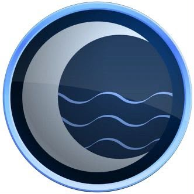
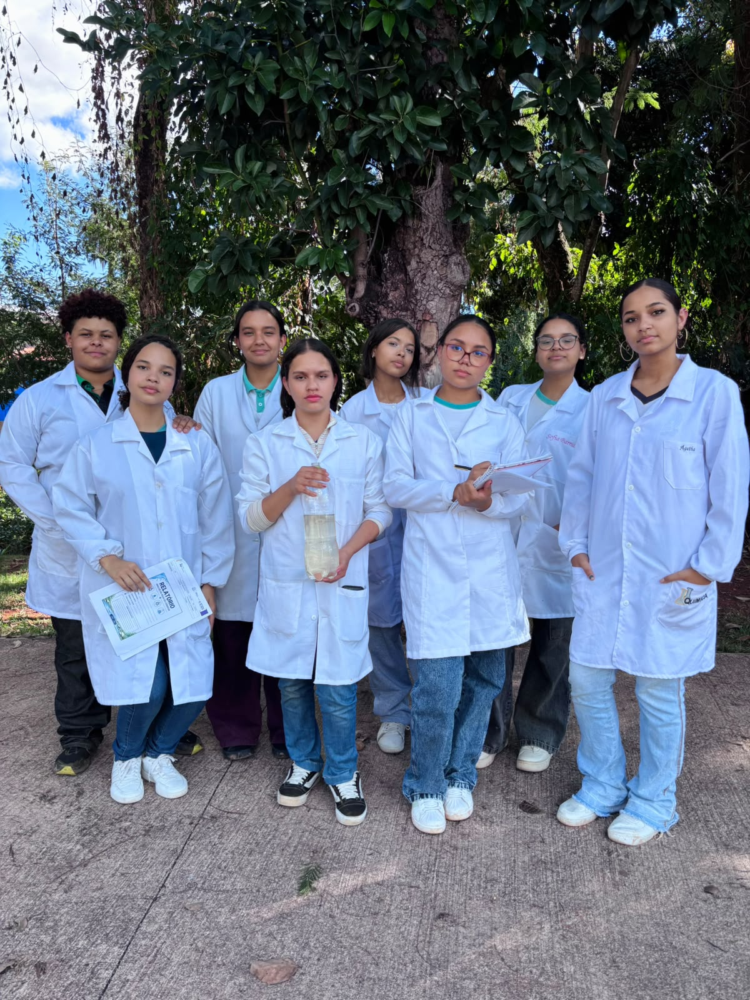
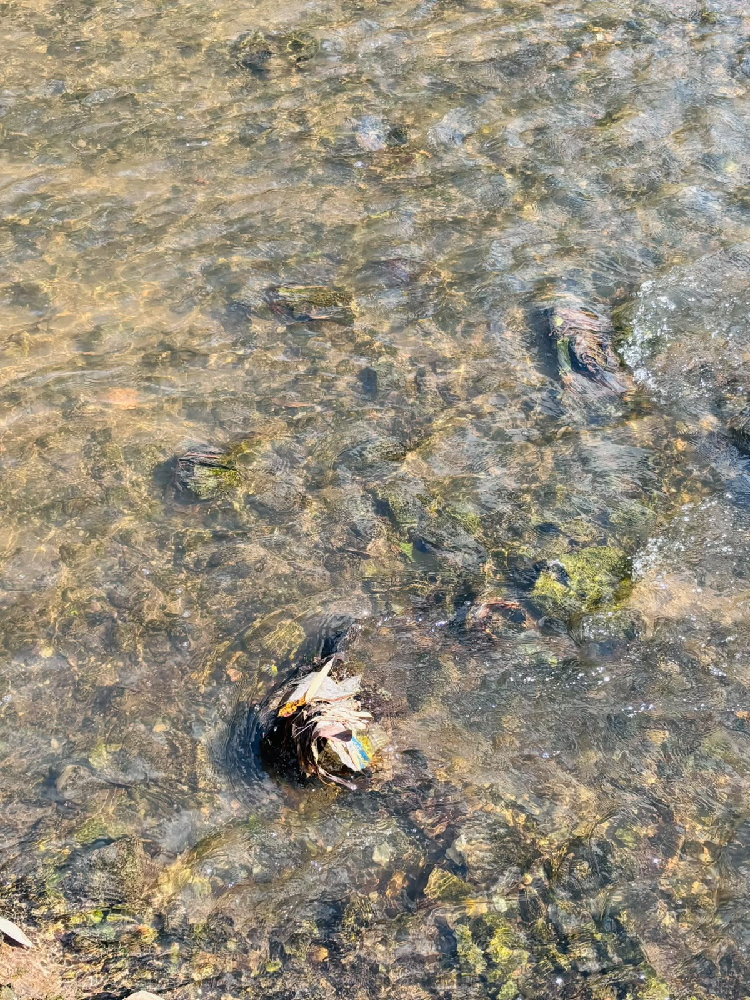
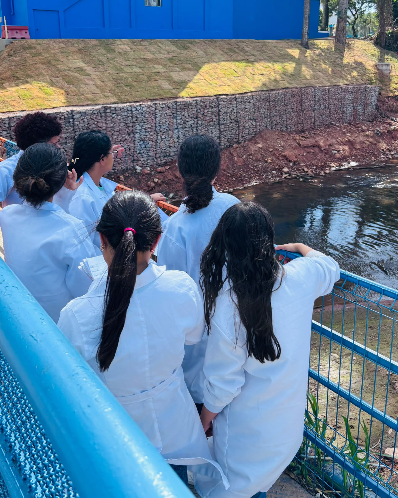

Precisão científica para garantir a qualidade da água


Quem somos
Explicando que a Water Moon é uma empresa fictícia criada pelas estudantes do Curso Técnico em Química da Escola Sandoval Soares de Azevedo – EMTI para a disciplina de Bioquímica Industrial.
Nossa História fictícias
Houve inicialmente uma contratação para avaliar a qualidade da água de uma fazenda
Serviços
Análise físico-química
Análise microbiológica
Avaliação da qualidade da água
Emissão de laudos técnicos
Consultoria para tratamento de água
Projeto Experimental
Desenvolvido na disciplina de Bioquímica Industrial do Curso Técnico em Química da Escola Estadual Sandoval Soares de Azevedo – EMTI, este projeto permitiu aplicar os conhecimentos adquiridos em sala por meio da coleta de amostras, análises laboratoriais e interpretação dos resultados. A experiência fortaleceu nossas habilidades técnicas, o trabalho em equipe e a compreensão da importância da qualidade da água para a saúde e o meio ambiente.


Pesquisa Realizada
Aqui entram os dados do relatório:
* Local de coleta: Córrego Barreirinho – Fundação Helena Antipoff
* Data da coleta: 16/06/2026
* Condições ambientais: Temperatura ambiente: 23 °C
Temperatura da água: 23 °C
Clima ensolarado
Correnteza fraca
Presença de vegetação
Solo exposto
Construções próximas
Resíduos sólidos nas proximidades
* Características da amostra
Água transparente
Odor fraco
Presença de partículas suspensas
pH: 6 (levemente ácido)
* Resultados laboratoriais
Presença de microalgas
Presença de protozoários
Presença de bactérias
Presença de matéria orgânica
Indícios de partículas em suspensão
* Conclusão técnica
Com base nas análises realizadas, foi possível avaliar as características da amostra de água coletada e identificar aspectos relevantes para sua qualidade. Os resultados obtidos evidenciam a importância do monitoramento contínuo dos recursos hídricos, permitindo a identificação de possíveis alterações e auxiliando na adoção de medidas adequadas para sua preservação. A Water Moon reafirma seu compromisso com a excelência técnica, a confiabilidade dos resultados e a promoção da qualidade da água.
Fundamentação Científica
A metodologia aplicada neste projeto foi inspirada nos procedimentos descritos no estudo “Análise Parasitológica Parcial da Água do Córrego Barreirinho dentro da Fundação Helena Antipoff”, desenvolvido pela professora Anne, que serviu como base para a realização das coletas, observações e análises laboratoriais.
Concluímos este projeto com a certeza de que foi uma experiência de grande aprendizado, fortalecendo nossos conhecimentos, o trabalho em equipe e nossa preparação profissional.
Agradecemos à professora Anne pelo apoio, dedicação e ensinamentos, fundamentais para a realização deste projeto e para o nosso crescimento.